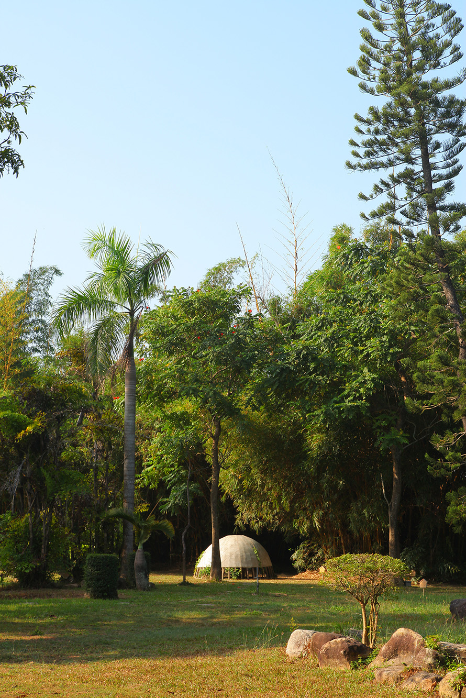
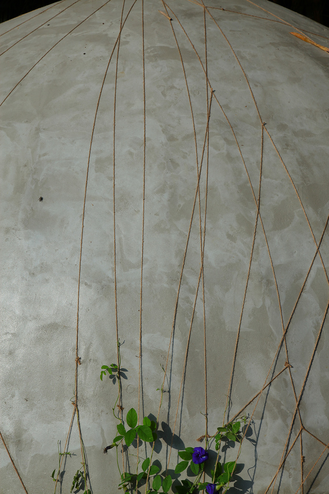
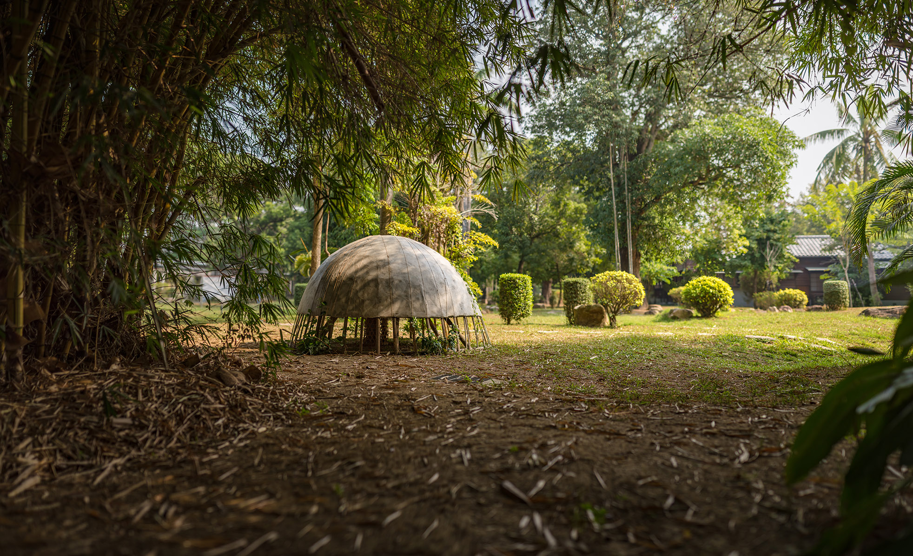

Nest
Permanent audiovisual installation, multi-media. Concrete, bamboo, steel, speakers, amplifier, fan, plants. 2018. Installation view at Tsung Yeh Arts and Cultural Center, Tainan. Created for the Madou Sugar Industry Art Triennial 2019. Video courtesy of the authors.
«Nest» is a site-specific environmental art project that was realized in the Madou District of Tainan City, Taiwan. The concrete sculpture is a symbolic birdhouse, which stands as a permanent reminder of the impact and cost of progress. The placement of the structure in a repurposed factory complex monumentalizes departed industrialization, which contributed to the soundscape of the region today. Construction methods, empowered by the structural elements – bamboo and concrete – mirror the architectural techniques, which are unique to the region. The dome shape of the sculpture mimics the distinctive acoustic properties of orthodox cathedrals. The piece radiates low frequency sonic waves to balance out urban noise reestablishing a peaceful habitat for birds and other animals. The acoustic arrangement emphasizes the natural sensory diversity, framing the transition between past, present and future in the districts’ auditory evolution. «Nest» provides a positive viewpoint to industrialization, reminding us that it could be a tool used towards a harmonious and environmentally beneficial outcome.
Installation view at Tsung Yeh Arts and Cultural Center, Tainan. Photo courtesy of the authors.
The work demonstrates that positive environmental change is still possible if we abandon our disrespectful attitude towards nature. The artwork enables visitors to visualize the influence of civilization on nature and specifically the negative impact of rapid urbanization and raises questions regarding humanity’s future. What would our planet look and sound like if we continue down the same road?
Installation view at Tsung Yeh Arts and Cultural Center, Tainan. Up photo courtesy of the authors. Down photo courtesy of Rich John Matheson.
